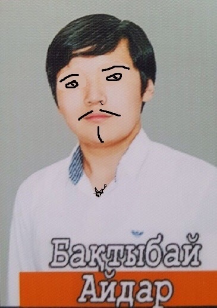

Aidar, Ancient Baktybation
«Ice takes all.»
Первой способностью Cold Feet Ancient Apparition пытается заморозить врага, в результате чего тот начинает получать периодической урон.
Второй способностью Ice Vortex герой создает вихрь, который замедляет скорость передвижения и понижает сопротивление магии в зоне действия.
Третьей способностью Chilling Touch выпускает ледяной шар который сильно замедляет врага на короткий промежуток времени.
Ультимативная способность Ice Blast запускает снаряд в направлении выбранной точки на карте. Чем дальше, тем больше радиус взрыва.
Из истории Kaldr можно понять, что он олицетворяет собой тепловую смерть вселенной, один из теоретических концов вселенной. Согласно этой теории, вселенная придет в состояние термодинамического равновесия и системы перестанут обмениваться энергией друг с другом. Это приведет к остыванию вселенной и отсутствию процессов поглощения энергии, равно как и жизни.
Весна опять пришла
И лучики тепла
Доверчиво глядят в мое окно
Опять защемит грудь.
И в душу влезет грусть,
По памяти пойдет со мной.
Пойдет, разворошит
И вместе согрешит
С той девочкой, что так давно любил.
С той девочкой ушла,
С той двочкой пришла.
Забыть ее не хватит сил.
Владимирский централ (ветер северный)
Этапом из Твери (зла немеряно)
Лежит на сердце тяжкий груз.
Владимирский централ (ветер северный)
Хотя я банковал (жизнь разменяна)
Hо не очко, обычно, губит,
А к одиннадцати - туз.
Там под окном,
Проталина тонка
И все ж не долга моя весна.
Я радуюсь, что здесь
Хоть это-то, но есть.
Как мне твоя любовь нужна.
